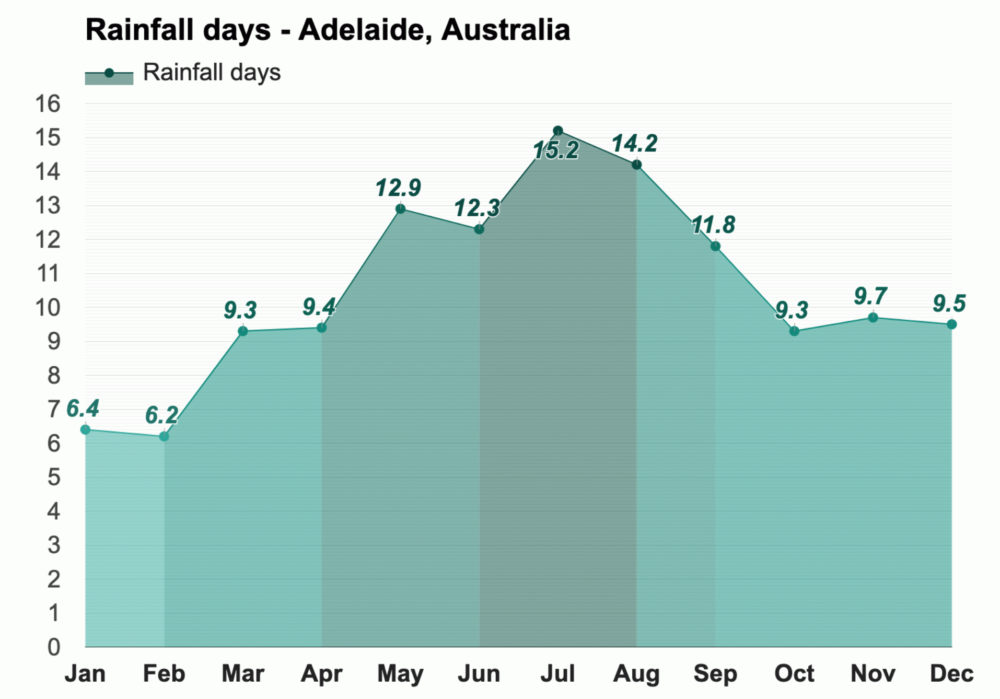

Temperature 
With an average high-temperature of 26.3°C (79.3°F) and an average
low-temperature of 17.8°C (64°F), January is the warmest month in
Adelaide.
The coldest month is July, with an average high-temperature of
13.9°C (57°F) and an average low-temperature of 9.3°C (48.7°F).
December has the most sunshine of the year in Adelaide, Australia,
with an average of 10.1h of sunshine. The month with the least
sunshine in Adelaide is August, with an average of 7.1h of sunshine.
Rain
In Adelaide, Australia, during the entire year, the rain falls for
126.2 days and collects up to 326mm (12.83") of precipitation.

The months with the highest humidity in Adelaide, Australia, are
June and July, with an average relative humidity of 74%. The month
with the most rainfall in Adelaide, Australia, is August, when the
rain falls for 14.2 days and typically aggregates up to 43mm (1.69")
of precipitation.
The least humid month in Adelaide is January, with an average
relative humidity of 58%. The month with the least rainfall in
Adelaide is March, when the rain falls for 9.3 days and typically
collects 16mm (0.63") of precipitation.
Wind
* The above information is sourced from Weather-At. Take a
visit for
more information...
Population
1,387,290(Metro)
Median Age 29
Ancestry
The most common ancestries in Adelaide were Chinese 22.9%, English
17.1%, Australian 11.4%, Irish 5.4% and Scottish 4.8%.
Country of birth
In Adelaide, 38.8% of people were born in Australia. The most
common countries of birth were China (excludes SARs and Taiwan)
17.5%, Malaysia 4.4%, England 3.4%, Hong Kong (SAR of China) 2.8%
and India 1.9%.
Religion
In Adelaide, No Religion, so described was the largest religious
group reported overall (56.2%).
The most common responses for religion in Adelaide were No
Religion, so described 47.7%, Not stated 15.1%, Catholic 11.0%,
Buddhism 5.0% and Anglican 4.6%.
* The above information is sourced from
Australian Bureau of Statitics. Take a visit for
more information...
RoofClimb
Head to the Adelaide Oval and embark on an adventure as you scale the roof of this iconic structure. Your reward? Unparalleled 360-degree views of Adelaide, from the coastline to the hills and beyond.
Kangaroo Island
Kangaroo Island is a nature lover's paradise, with prolific native wildlife, dramatic coastal sightseeing and bountiful farmlands. 13km (8mi) off the coast of South Australia, it is one of the best places in Australia to see wild animals like koalas, kangaroos, sea lions and seals.
Swim with wild dolphins
Walk along sea lions
See remarkable rocks
Beaches in Adelaide
Jump in the car, chuck on your bathers and within the hour you can be sprawled on a towel in the sun at Glenelg or perfecting your freestyle at Semaphore. With so many options so close to the city, it’s easy to be overwhelmed.
* The above information is sourced from
Australia.com Take a visit for
more information...